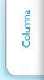

Lesiones de rodilla
Deportivas
Este tipo de lesiones se deben en gran frecuencia a eventos traumáticos deportivos (foot-boll, básquet-boll, voleit-boll, atletismo, spining, artes marciales, etc.), involucrando a los meniscos, ligamentos y cartílago que requieren en gran medida de la reparación pronta, para evitar secuelas futuras que comprometan para sus actividades e inclusive la marcha.
El tratamiento de estos padecimientos deberá ser a la brevedad y con las medidas de protección articular más novedosas, que van desde terapia laser externa, ultrasonido, Ozono, suplementos de líquido sinovial y de forma quirúrgica con radiofrecuencia, estimulación mecánica, remodelación y/o reinserción meniscal, injertos de cartílago, ligamentos y aplicación de factores de crecimiento.
Así mismo, para la cirugía de ligamento cruzado anterior, se requiere de un injerto obtenido del mismo paciente, ya que este es el que mejor se integrara, logrando resultados favorable a las 6 semanas de ser operado; cabe mencionar que estos tratamientos se realizan por medio de artroscopia, por lo que su recuperación será rápida, efectiva y segura.
Artroscopia (microcirugía) para reparación meniscal y de cartilago articular.
Interior de una rodilla con menisco y cartílago rotos.
Lesiones de rodilla
Degenerativa
Estas son características en paciente mayores de 50 años; la afección principal se debe a un desgaste del cartílago y meniscos que pierden la capacidad de amortiguar el peso y se manifiesta por dolor de predominio matutino el cual disminuye en intensidad después de caminar un poco y se acompaña de sensación de rigidez y aumento de volumen, lo que dificulta para actividades como subir y bajar escaleras.
Así mismo, es común observar que en pacientes de más de 70 años, pueden presentar deformidad (rodillas arqueadas o metidas) siendo esta la secuela de la pérdida de las estructuras de soporte; por tal razón, el tratamiento deberá estar encaminado en un principio a proteger el cartílago, empleando medicamentos de protección articular, ozono, liquido sinovial y programa de ejercicios, por otra parte, cuando el padecimiento ya es de grado avanzado.
La solución será una cirugía de reemplazo articular (prótesis), mismas que se fijan con cemento de última generación, que permiten al paciente iniciar la marcha asistida con andadera, tan solo 24 hrs después de ser operado, por tal razón, este tipo de procedimientos hoy día tienen gran éxito, siempre y cuando el cirujano y su equipo tengan amplia experiencia en este tipo de procedimientos.
“Recuerde usted, hoy día no existe medicamento milagroso que forme cartílago, así que mejor acuda a un profesional de la salud que le oriente sobre que le conviene para su padecimiento”.
Paciente con dolor intenso, deformidad y pérdida de cartílago en la región interna de la rodilla.
Misma paciente a quien se le coloca un prótesis total, con excelente evolución, observe la correcta alineación con respecto a la imagen anterior.